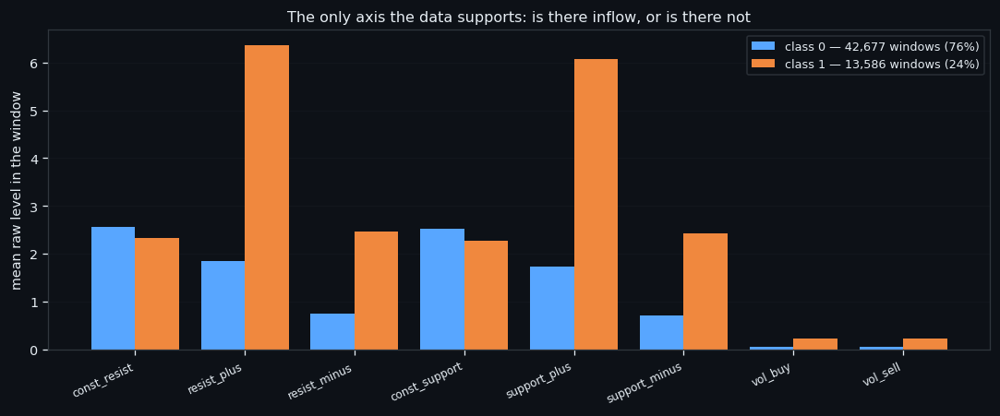
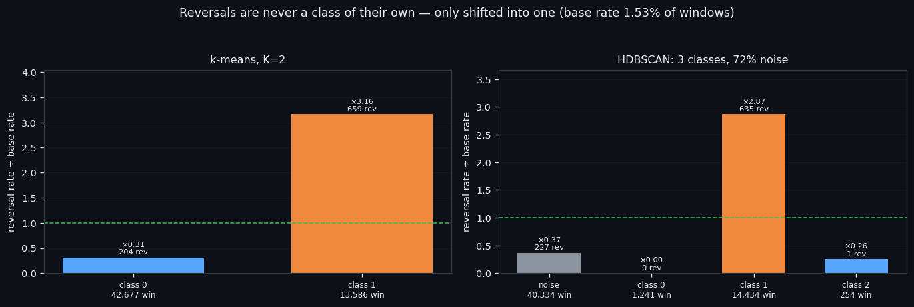
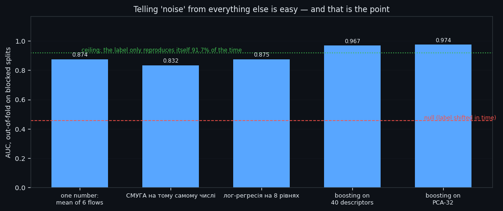
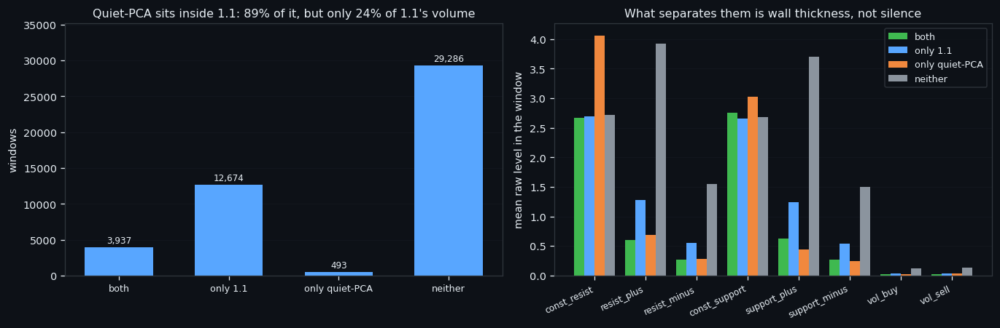

One Axis, Again: Clustering 56,000 Order-Book Windows Without a Teacher
In shortTake 56,263 windows of the order book, 210 seconds each, eight features per second. Tell the algorithm nothing — not the price, not the time, not our own signals. Ask only one thing: does this pile of windows fall apart into groups by itself? It does, along exactly one axis, and that axis is not the one anybody hopes for.
Narrated walkthrough · plays from YouTube when you press play.
① The method, and the three guards that make it mean something
The recipe is deliberately boring, because the guards matter more than the method: PCA to 32 dimensions, then k-means with K from 2 to 10, and in parallel UMAP to 10 dimensions and HDBSCAN. The 2-D map you see in the charts is only a map — clusters are never searched for on it.
Three guards run beside every split:
| guard | what it does | why it is not optional |
|---|---|---|
| hard null | shuffles each column between windows, destroying everything except the marginal distributions | it produced 11 "classes" with 78% noise — nearly the same as the real data |
| stability | rebuilds the entire pipeline with a different seed and compares labels | a repeat clustering in a fixed space overstates it, sometimes twofold |
| max_share | share of the largest class among clustered points | a "nearly everything versus a crumb" split reproduces itself and looks stable out of nothing |
The real split scores 0.724 stability against 0.171 for the null. That gap — not the number of classes, not the share of noise — is the only thing that says the structure exists.
Everything in this series feeds one goal: an automated trading bot that reads the order book instead of the price. A bot trained on classes that a shuffled dataset can also produce is a bot trained on nothing, so this is where the money is saved.

② One axis: is there inflow, or is there not
K=2, chosen by how far the silhouette beats the null rather than by the silhouette itself.
| class | windows | resist_plus level | reversal windows | versus base |
|---|---|---|---|---|
| the one with inflow | 13,586 (24%) | 6.36 | 659 | ×3.16 |
| the one without | 42,677 (76%) | 1.84 | 204 | ×0.31 |
The whole difference is the flow features — inflow and drain on both walls — while the const walls themselves stand at the same level in both classes and take no part in the division. HDBSCAN, a completely different algorithm, finds the same thing: its reversal-rich class carries them at ×2.87, and its wall-shaped class has essentially none.
And the reversals: ARI against the reversal label is 0.044 and 0.029, against the phase of the zigzag 0.009. In plain words, the split is not a reversal detector. Reversals are merely three times denser on one side of the axis than on the other.
Everything in this series feeds one goal: an automated trading bot that reads the order book instead of the price. This is the honest ceiling of unsupervised work here: it hands a bot a filter that triples the density of what it is looking for, not a signal it can trade.

③ 'Noise' is not a mystery, it is a level
HDBSCAN leaves 72% of the windows unassigned, and "noise" sounds like "the algorithm gave up". So we asked whether the noise can be told apart from everything else — and it can, almost trivially.
| how we separate noise | AUC, out-of-fold on blocked splits |
|---|---|
| boosting on a 32-dimensional PCA space | 0.974 |
| one number — the mean level of the six flow features | 0.874 |
| the null (the same label shifted in time) | 0.455 |
There is even an explicit rule with no model at all: if that one number falls in the band -0.379 … 0.256, the window is noise. It covers 66% of all windows, is 92.3% pure, and catches 85.0% of all the noise there is.
So noise is not a mystery — it is the quiet end of a single scale. Worth knowing before building anything on top of it: the ceiling of this task is 91.7%, because that is how often the label reproduces itself when the clustering is rebuilt with another seed.
Everything in this series feeds one goal: an automated trading bot that reads the order book instead of the price. Cheap, explainable rules like this band are what actually survive into production; a model that costs 30× more and scores the same is a liability.

④ Two independent definitions of a quiet market
Cut the noise once more and its quiet half — we call it 1.1 — is 18,320 windows with 16 reversal windows in them: ×0.28 the base rate, which is to say practically dead.
We already had a separate, independently trained detector of quiet market — "quiet PCA", built with an external 28-day norm. Do the two agree?
| windows | reversals | |
|---|---|---|
| both | 3,937 | 1 |
| only 1.1 | 12,674 | 8 |
| only quiet-PCA | 493 | 0 |
| neither | 29,286 | 614 |
89% of quiet-PCA lies inside 1.1, but takes only 24% of its volume: 1.1 is the wider "quiet", quiet-PCA its narrow core. What separates them is wall thickness (const_resist 4.06 in the quiet-PCA-only group against 2.69 elsewhere) — that is what the external norm adds, not the fact of silence itself.
What is next. Two studies that cut the same dataset by the geometry of the move — the rising half and the falling half — and one that rebuilds everything week by week to see what survives. Then we use what we learned here to throw the dead part of the dataset away. Everything in this series feeds one goal: an automated trading bot that reads the order book instead of the price. Fewer windows, same reversals, cheaper training.

All our bots have been tested live. The best one is Line 7.
More than a dozen bots were built from this research. Line 7 — two small transformers that read 160 hours of order book as one picture — is the only one ahead of buy & hold in live trading: +5.44% since 5 Oct while BTC moved −5.29%. Every trade is in the report.
Everything on this site is research, not financial advice.
How to read this site in 5 minutes · All studies as one .md for AI · All research
← All research